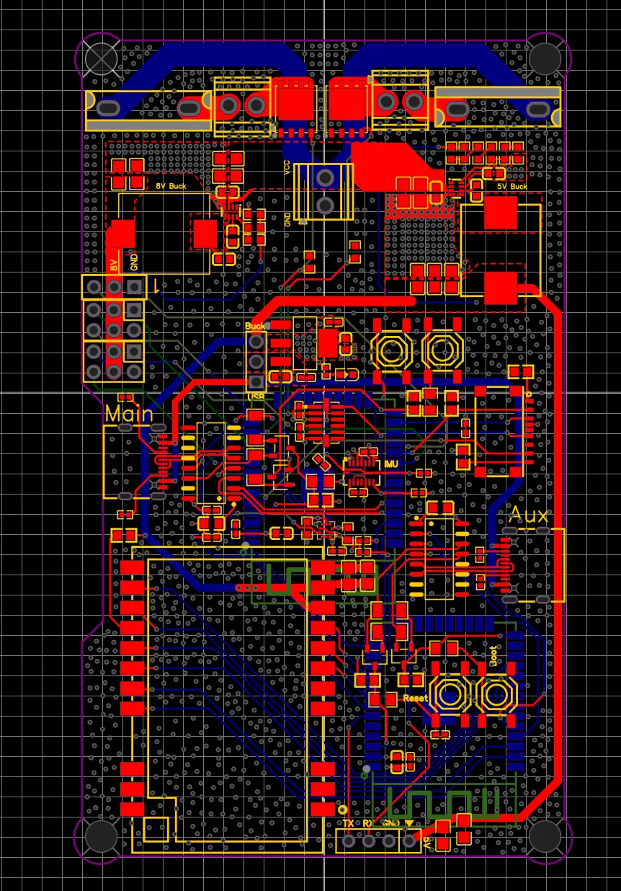
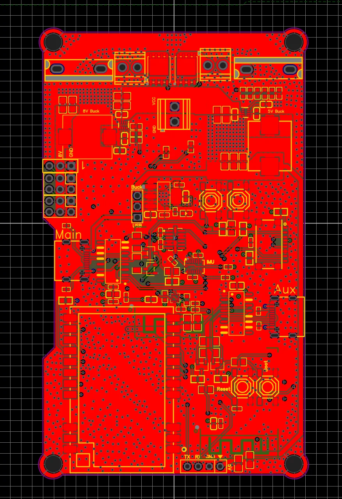
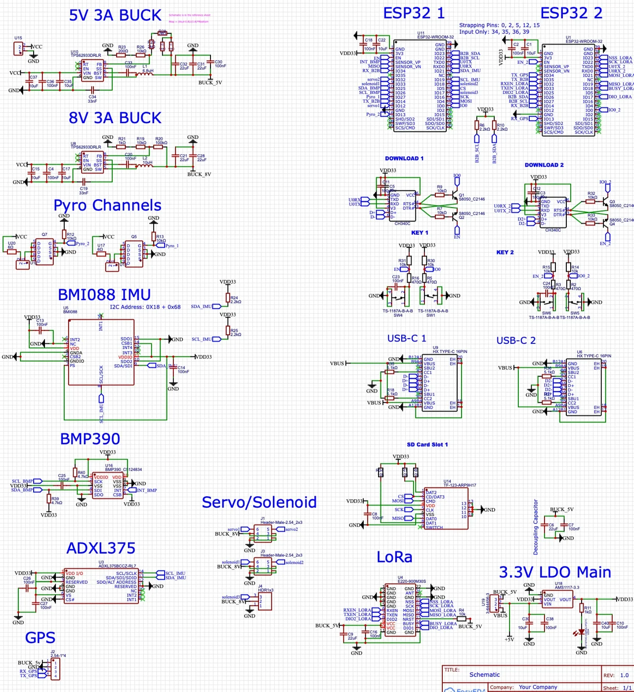
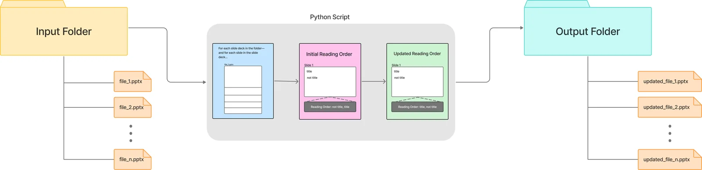

Projects
Research, industry, and engineering work.
All
Ongoing
Electrical
AI/ML
Research
Web
Accessibility
Accessibility
Automated Accessibility Enhancer
Open-source tool that fixes PowerPoint reading order and writes missing alt text. UW, presented at EDUCAUSE 2025.
Open →
Research · 2024
RAG for Pathology Reports
Levy Lab, Dartmouth Health. A lightweight retrieval-augmented tool that summarizes relevant cancer cases from a pathology report database, and runs offline on modest hardware.
Open →
Hackathon · Winner
sine
AI reflection journal from text, voice, or video check-ins, with mood and stress trends over time. Best Data Visualization at HopHacks Fall 2025.
Open →
Hardware
Motor Driver Pi Hat
Stepper driver HAT for the Hopkins Mars Rover arm. KiCad, ongoing.
Open →
Web · 2026
Recolors each region of a garment photo with classical computer vision (Lab color space, clustering, masking). No model, no backend; images never leave the browser.
Try it →
Code →
Data · 2026
A Streamlit dashboard over a normalized SQLite schema built from PokeAPI. Filter by generation; joins and aggregations surface type spread and stat leaders.
Try it →
Code →
Case study · ongoing
Baltimore MSW Case Study
Interviews with waste professionals, community groups, and residents through JHU's Kindling pre-accelerator. Defines “idle resources”: materials that still have value but sit unused before disposal, invisible to recycling and diversion metrics.
Download the paper (PDF) →
Research · ongoing
CLSP Multilingual Benchmark
With Prof. Ziang Xiao at JHU CLSP. South China Sea coverage in six languages, analyzed for stance, topics, and framing, then used to test how Claude, GPT-4o, and DeepSeek summarize the same news differently.
Related: Faux Polyglot →
Published · 2023
Journal of Student Research. Compared six NLP techniques for reading emotion in English poetry; bigram and word-embedding models were most accurate at about 62%.
Paper →
Hardware
CanSat Competition
Designed and built a 1 kg satellite for the international CanSat competition. Led ground control, sensors, and communication & data handling; one of 40 US teams to advance to launch.
Open →
×
Hardware
CanSat Competition
International CanSat Competition — one of 40 US teams to advance to launch
A 1 kg satellite, designed and built by the team. I was in charge of the ground control
system, the sensor subsystem, and communication and data handling. The flight board runs two
ESP32s with a LoRa radio, GPS, an SD card, and a BMI088 IMU, BMP390 barometer, and ADXL375
accelerometer, with 5 V and 8 V buck converters, two pyro channels, and servo and solenoid outputs.
Photos

Board layout

Ground pour

Schematic
×
Hardware · ongoing
Motor Driver Pi Hat
Johns Hopkins Mars Rover Team — Electrical Subteam, also on communication and power system design for the University Rover Challenge
A Raspberry Pi 4 HAT that gives the rover its own motor control board for the science mission.
The Pi header breaks out to two Pololu DRV8825 stepper drivers and one
external microstep driver, with JST connectors for each joint. Designed in
KiCad; still iterating ahead of the University Rover Challenge.
Photos
Rev A schematic — KiCad 9.0.6
Board layout
Assembled board
Iterations
Sep 2026
Rev A schematic
Pin budget settled: two DRV8825s on GPIO, the microstep driver on its
own ENA/DIR/PUL trio. Six JST breakouts for the joints.
Next
Board layout & fab
Route the two-layer HAT, check motor-supply clearances, send Rev A out.
×
Research · 2024
Retrieval-Augmented Generation for Pathology Reports
Dartmouth Health, Levy Lab — Summer 2024 internship; returned in 2025 as an EDIT AI Mentor
Built with a team of three other high school interns, bringing a shared interest in
computational linguistics to the Levy Lab's healthcare work. The tool helps clinicians
understand a patient's cancer case by summarizing key details of similar cases pulled
from a large database of pathology reports. It runs on an efficient model, so it
needs no heavy compute or internet access.
Retrieval fuses BM25 and FAISS search; generation runs on Microsoft phi-2. As an EDIT AI
Mentor the next year, I guided interns across clinical ML projects and led preprocessing and
experiment design: WSI tiling, stain normalization, class-imbalance mitigation, and
multimodal alignment.
Poster
Download the research poster (PDF) →
Talk
Watch on YouTube →
×
Accessibility · ongoing
Automated Accessibility Enhancer
University of Washington — Advancing Accessibility for Engineering Education, with Prof. Anant and Dr. Lalitha Subramanian
An open-source tool that fixes common accessibility problems in PowerPoint files. Screen
readers read shapes in the order they were added, not top to bottom, so the tool moves slide
titles to the front of the reading order, writes descriptions for images that have no alt
text, and produces a slide-by-slide report of every change.
How it works
Written in Python on python-pptx. Decks come in through a Flask upload page, a folder script,
or an S3 bucket on AWS Lambda (deployed with Terraform), and all go through one pipeline:
older .ppt files are converted with LibreOffice, shapes named “Title”
are moved first, and each image without alt text is described by Claude on Amazon Bedrock.
Out come a fixed .pptx and a report. 123 tests.

Original folder workflow — before the web and Lambda front ends
Iterations
Nov 2025
EDUCAUSE 2025 Online poster
Presented Building Institutional Community of Practice around IT Accessibility with Lalitha Subramanian.
Aug 2026
Web version
Upload files in the browser, track progress, read each report, download the fixed deck.
Sep 2026
Bedrock alt text, AWS deployment, bug fixes
Descriptions moved from a local model to Claude on Bedrock, so no GPU is needed. The
pipeline runs on Lambda from S3. Four bugs fixed, including human-written alt text being
overwritten when it matched the shape name.
Next
EDUCAUSE 2026, Denver
Attending in person as an EDUCAUSE Pipeline scholar. Then: title detection by position
and formatting, PDF support, university sign-in, and moving the web app to AWS.
Limitations
Titles are found by shape name only. Generated alt text needs human review, and technical
diagrams are still hard to describe well. There are no user accounts yet, and files are
processed one at a time.
Project site →
·
Source code on GitHub →
×
Hackathon · 2025
sine
HopHacks Fall 2025 — Winner, Data Driven Track: Best Data Visualization by Marshall Wace. With Kinnera Tirumala, Ujjwal Kaur, and Naavya Jain. Now on the HopHacks organizing team.
A personal reflection engine for students who don't have time to journal. One check-in by
text, voice, or video becomes a short summary, advice, and prompts from an LLM, and sine
charts positivity, stress, goals, and mindset over time. Built in 36 hours with a team that
had mostly met that week.
How it works
Voice and video entries are transcribed with whisper.cpp, tuned to pick out the closest
speaker so it works on a subway or in a crowded room. The transcript goes to Gemini, which
returns mood and stress scores plus goals and tasks it finds in the entry. Flask backend,
HTML/CSS/JavaScript front end.
Screenshots
Demo
Devpost →
·
Source code on GitHub →